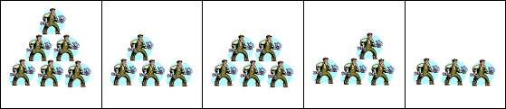
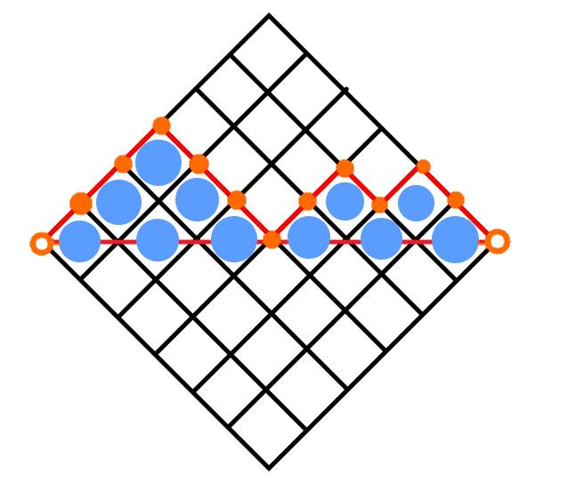
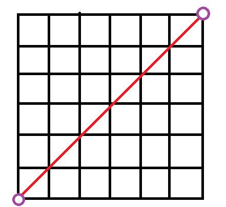

題目 Problem
題目連結：https://zerojudge.tw/ShowProblem?problemid=c453
敘述 Description
某特技團經常表演疊羅漢的節目。表演時通常在最底層會先站好一排連續的 n 個人，然後在任意連續兩人的肩膀上面便可支撐另一個人站在這兩個人的上一層。在第二層如果有連續兩人的話，當然可繼續往第三層疊上一個人，以此類推。為了增加趣味性，有時會組合出不同的型態展現在觀眾的眼前。舉例來說，如果 n=3，也就是說底層共有 3 個人，那麼就有下列 5 種不同的組合。

如果 n=4，也就是說底層共有 4 個人，那麼你也可以列舉一下，便可知道共有下列 14 種不同的組合。現在針對不同的 n 值，請你撰寫一個程式來計算共有幾種不同的組合？
輸入 Input
第一行有一個正整數 n，1 ≤ n ≤ 20。
輸出 Output
請輸出共有幾種不同的組合。
範例輸入 Sample Input
1 | //範例輸入一 |
範例輸出 Sample Output
1 | //範例輸出一 |
提示 Hint
題解 Solution
動態規劃 Dynamic Programming
感覺這題很DP，不過 oToToT 大大真的寫出了 DP 算式：
令$dp[i][j]$代表第$i$斜排他的長度要是$j$時的方法數
$dp[i][j]=\sum_{k=j-1}^{i-1}dp[i-1][k]$
因為會發現若是這裡要擺長度為$j$那前面最少要擺長度$j-1$，所以可以枚舉前一斜條擺放的數量來計算這個狀態的方法數。
而對於n個斜條的總方法數，只要再枚舉最後一斜條有幾個人就好了。
我果然很低端，回我的當下我真的看不懂QQ
卡特蘭數 Catalan Number
（至於為何會想到卡特蘭數，請滑到後記）
這是我理解的版本，連結
$C(0,0)=1$
$C(1,1)=C(0,0)$
$C(2,2)=C(1,0)+C(1,1)$
$C(3,3)=C(2,0)+C(2,1)+C(2,2)$
$C(4,4)=C(3,0)+C(3,1)+C(3,2)+C(3,3)$
…
$C(N,N)=C(N-1,0)+C(N-1,1)+…+C(N-1,N-1)$
可以把這些想像成
$N$層上面$N-1-0$層有幾種組合
$N$層上面$N-1-1$層有幾種組合
…
$N$層上面$N-1-i$層有幾種組合
…
$N$層上面$1$層有幾種組合
$N$層上面$0$層有幾種組合
再加上 涂家銘 大大提供給我參考的圖：


稍微轉一轉是不是就變成高中熟悉的最短路徑組合呢？
程式碼 Accepted Code
1 |
|
後記 Afterword
這題我一開始打開 Google 搜尋「0 1 2 5 14 OEIS」（我認為0位是0種，所以一開始打0）作弊開好開滿
但沒想到一打開就是傳說中的卡特蘭數列
只有聽到「清大程式解題營」的 旺陽學長 提到過
但沒有寫過這種題目
不過 涂家銘 大大表示：
幫社團出練習賽題目其中一題用 DP 做會 TLE
（練習賽也太狠了吧QQ）
的確，畢竟這題的最大值$N=20$，如果$N$更大，有機會爆 TLE 了